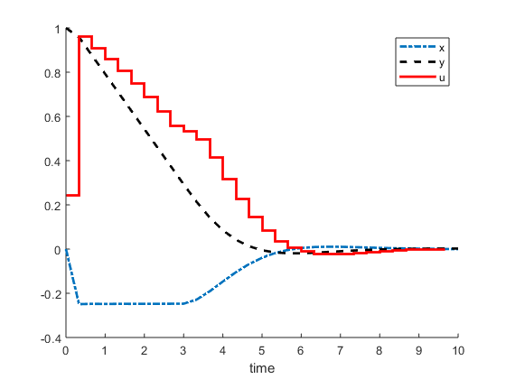

function [solution,times,solver] = vanderpol
END_TIME = 10;
solver = ocl.Solver(END_TIME, @varsfun, @daefun, @pathcosts, 'N', 30);
solver.setInitialBounds('x', 0);
solver.setInitialBounds('y', 1);
initialGuess = solver.getInitialGuess();
initialGuess.states.x.set(-0.2);
[solution,times] = solver.solve(initialGuess);
figure
hold on
plot(times.states.value,solution.states.x.value,'-.','LineWidth',2)
plot(times.states.value,solution.states.y.value,'--k','LineWidth',2)
stairs(times.controls.value,solution.controls.F.value,'r','LineWidth',2)
xlabel('time')
legend({'x','y','u'})
end
function varsfun(svh)
svh.addState('x', 'lb', -0.25, 'ub', inf);
svh.addState('y');
svh.addControl('F', 'lb', -1, 'ub', 1);
end
function daefun(daeh,x,~,u,~)
daeh.setODE('x', (1-x.y^2)*x.x - x.y + u.F);
daeh.setODE('y', x.x);
end
function pathcosts(ch,x,~,u,~)
ch.add( x.x^2 );
ch.add( x.y^2 );
ch.add( u.F^2 );
end
This is Ipopt version 3.12.3, running with linear solver mumps.
NOTE: Other linear solvers might be more efficient (see Ipopt documentation).
Number of nonzeros in equality constraint Jacobian...: 1282
Number of nonzeros in inequality constraint Jacobian.: 0
Number of nonzeros in Lagrangian Hessian.............: 300
Total number of variables............................: 270
variables with only lower bounds: 120
variables with lower and upper bounds: 30
variables with only upper bounds: 0
Total number of equality constraints.................: 240
Total number of inequality constraints...............: 0
inequality constraints with only lower bounds: 0
inequality constraints with lower and upper bounds: 0
inequality constraints with only upper bounds: 0
iter objective inf_pr inf_du lg(mu) ||d|| lg(rg) alpha_du alpha_pr ls
0 3.5018519e+000 1.15e+000 8.82e-001 -1.0 0.00e+000 - 0.00e+000 0.00e+000 0
1 2.9631458e+000 4.40e-001 7.85e-001 -1.0 8.81e-001 - 3.95e-001 6.19e-001h 1
2 4.1190661e+000 2.18e-003 2.50e-001 -1.7 3.93e-001 - 8.08e-001 1.00e+000h 1
3 4.1649602e+000 9.00e-004 4.69e-003 -1.7 1.28e-001 - 1.00e+000 1.00e+000h 1
4 3.8509355e+000 8.37e-004 2.66e-003 -2.5 1.32e-001 - 1.00e+000 1.00e+000f 1
5 3.6999144e+000 1.81e-004 1.36e-002 -3.8 6.41e-002 - 9.09e-001 1.00e+000f 1
6 3.6788546e+000 6.99e-005 1.39e-001 -3.8 2.72e-002 - 1.00e+000 6.79e-001h 1
7 3.6705427e+000 1.16e-005 6.11e-002 -3.8 1.43e-002 - 9.82e-001 9.38e-001f 1
8 3.6707278e+000 2.55e-007 9.63e-006 -3.8 6.09e-003 - 1.00e+000 1.00e+000f 1
9 3.6688585e+000 4.80e-007 1.15e-001 -5.7 6.48e-003 - 9.55e-001 6.85e-001f 1
iter objective inf_pr inf_du lg(mu) ||d|| lg(rg) alpha_du alpha_pr ls
10 3.6685573e+000 2.31e-007 5.09e-002 -5.7 3.43e-003 - 1.00e+000 6.01e-001f 1
11 3.6684546e+000 3.29e-008 9.54e-003 -5.7 1.33e-003 - 1.00e+000 8.77e-001f 1
12 3.6684451e+000 1.12e-010 7.42e-009 -5.7 1.62e-004 - 1.00e+000 1.00e+000f 1
13 3.6684286e+000 9.17e-011 1.24e-004 -8.6 7.01e-005 - 9.98e-001 9.76e-001h 1
14 3.6684283e+000 3.60e-014 5.15e-013 -8.6 2.62e-006 - 1.00e+000 1.00e+000f 1
Number of Iterations....: 14
(scaled) (unscaled)
Objective...............: 3.6684282902826943e+000 3.6684282902826943e+000
Dual infeasibility......: 5.1500470554799449e-013 5.1500470554799449e-013
Constraint violation....: 3.6026737149086330e-014 3.6026737149086330e-014
Complementarity.........: 2.5075557321626229e-009 2.5075557321626229e-009
Overall NLP error.......: 2.5075557321626229e-009 2.5075557321626229e-009
Number of objective function evaluations = 15
Number of objective gradient evaluations = 15
Number of equality constraint evaluations = 15
Number of inequality constraint evaluations = 0
Number of equality constraint Jacobian evaluations = 15
Number of inequality constraint Jacobian evaluations = 0
Number of Lagrangian Hessian evaluations = 14
Total CPU secs in IPOPT (w/o function evaluations) = 0.287
Total CPU secs in NLP function evaluations = 0.000
EXIT: Optimal Solution Found.
t_proc [s] t_wall [s] n_eval
my_solver 0.287 0.287 1
nlp_f 0 0 15
nlp_g 0 0 15
nlp_grad_f 0 0 16
nlp_hess_l 0 0 14
nlp_jac_g 0 0 16
ans =
OclAssignment with content:
{
Variable:
Size: [302 1]
Type: OclStructure
Children: states, integrator, controls, parameters, h
Value: [0;1;-0.039132;0.998989;-0.161676;0.982567;-0.249267;0.958239;0.243403;0.333333;-0.249267;0.958239;-0.25;0.945337;-0.25;0.904462;-0.247692;0.874991;0.961065;0.333333;-0.247692;0.874991;-0.248835;0.862...
}
